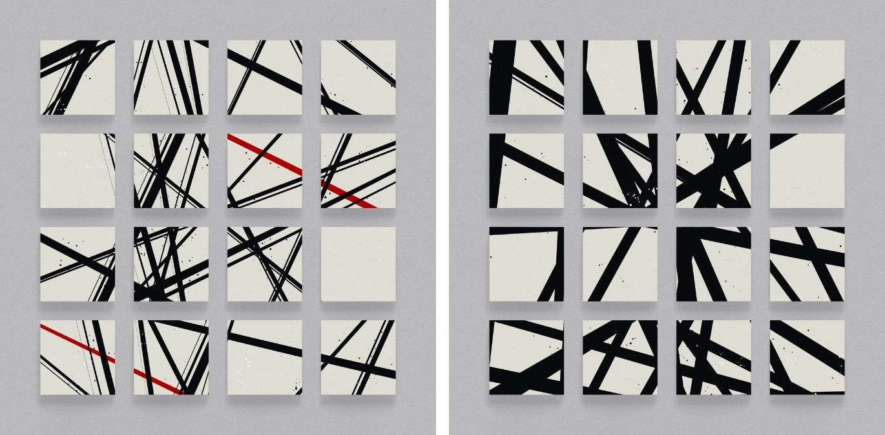
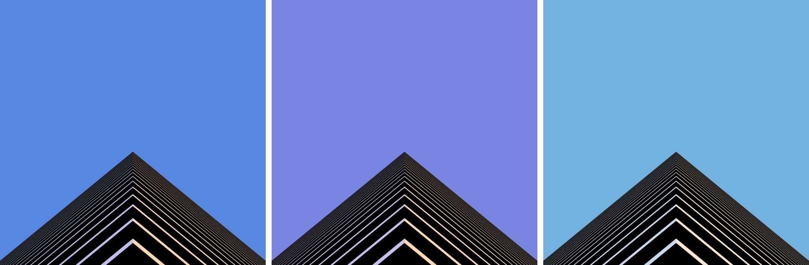

Genuary 2022

A month of generative art
As 2022 rolled in, I stumbled upon a site called genuary.art. It’s a month of daily creative coding challenges, like an Inktober for programmers. Check it out!
The challenge was to create a generative art piece for every day of January. Each day there was a prompt, and each code art was supposed to be based on the day’s prompt.
Having done some generative art in the past, I committed myself to the challenge. Sounds like fun!
Here I’ll show you all of my Genuary 2022 works and some info about the techniques I used.
Day 01 - Draw 10,000 of something.
A hexagonal lattice of tiny lines.
10,000+ tiny lines are placed in a hexagonal pattern.
Each line’s length is mapped from a coherent noise map, resulting in this undulating structure.
The lines aren’t straight. They’re a bit wiggly for a more natural look, achieved by perturbing the line with Gaussian random values.
Day 02 - Dithering.
Dithering is a digital trick to create more shades than possible in a limited color palette. It creates the illusion of more shades by varying the distribution of pixels in an image.
My dithering technique was simple lattice patterns with 7 possible shades.
Some extra care was given to the boundaries between shades to prevent odd-looking clusters that result from accidental alignment with neighboring patterns.
Day 03 - Space.
Simulated watercolor painting of a nebula.
I tried simulating watercolor here.
The simulation consists of a moisture map, a color map, and the following model:
- Any part of the canvas can be wet in varying degrees.
- Moisture spreads and evaporates.
- Colors spread and bleed when wet.
- Colors don’t spread when dry.
Moisture map debug view.
The result wasn’t perfect. Some boundary errors resulted in dark blobs and unnaturally bright edges. I wasn’t able to fix it in time for the day. In any case, it looked OK.
Day 04 - The next next Fidenza.
Fun with flow fields.
Fidenza is a highly-valued ($$$) generative algorithm by Tyler Hobbs, popular generative artist.
The core idea behind Fidenza is a flow field. So, I made flow field art.
 Uncurated set generated just for this article.
Uncurated set generated just for this article.
Instead of using coherent noise to generate the field, I used poles. It’s a bit like how magnetic poles influence magnetic fields.
With fewer poles, the polar / radial structure of the field becomes obvious, while more poles result in more complex patterns.
Day 05 - Destroy a square.

Some abstract art involving lines across square frames. Feels like something that could be hung on a wall in some lobby somewhere.
Day 06 - Trade styles with a friend.
Simulated cross-stitch of generated plants.
A friend gave me the prompt “cross-stitch”, and it was fun.
Everything was generated, from the canvas fabric, the threads, to the plant structures.
The smallest structure is the thread. A thread is simply a helix of colored curves with some highlights and shadows to imply depth.
At the opposite end of the scale is the largest structure, the plant. It is generated using a recursive branching algorithm (each branch can generate two smaller branches, and so on) with leaves at each node and potential flowers at the leaf nodes.
Backside simulation.
For fun, I wrote a backside simulation using a flood-fill algorithm.
Day 07 - Sol LeWitt Wall Drawing.
Sol LeWitt once said: “The idea or concept is the most important aspect of the work. The idea becomes a machine that makes the art.” (1967)
LeWitt has been making drawing algorithms decades before generative computer art even existed. The instructions were executed by other people to produce the tangible art thing. It was called conceptual art.
Now, JavaScript is doing the execution.
I also made some typewriter emulation on the side
- Live generator (Press Space to generate a new one.)
Day 08 - Single curve only.
Continuous line drawing of a face.
For this prompt, the idea of continuous line drawing immediately came into mind.
It’s the style of drawing where you don’t lift the pen until you finish the piece.
100+ outputs of the algorithm.
At the core of this piece is a graph algorithm.
First, I lay out all the possible contours of the face as a set of hardcoded curves. A diverse variation of proportions, angle, and facial expressions are randomly applied to the contours.
Then the curves are converted into a graph. Each of the curve’s endpoints becomes a node, which connects to its opposite endpoint as well as other nearby curves.
Debug view of the graph.
Starting from a random curve, it performs a pathfinding algorithm, a variation of A*, that maximizes the number of important contours and minimizes the jumps between curves.
The final path is then traced by a virtual pen with some physics for realistic-looking strokes.
Day 09 - Architecture.
 Abstract perspective on the corner of a building.
Probably the lamest piece I’ve done.
Day 10 - Machine learning, wrong answers only.
Visualization of a randomly-initialized spiking neural network.
Sometimes the synapses are biased in some general direction.
Day 11 - No computer.
Harmonograph drawings.
This was an interesting prompt. How do you make generative art without a computer to generate it?
I ended up building a harmonograph using cardboard and a scissor arm.
It was a nice change of pace. Though, unlike computer art, generating new pieces costed real paper and real ink. The physical world is messy.
Day 13 - 800x80.
Watercolor moons.
Apparently, #800x80 is a thing.
A sequence of images depicting a process seemed like a good fit for the long format. So I settled on rendering phases of the moon.
I tried to simulate watercolor again using the same technique as Day 03. This time I was able to fix the bugs, and I think it looks more like watercolor now.
As you might notice, I started skipping days at this point. Day 12 (Packing (squares, circles)) was missing. I was starting to get busy at work around this time.
Day 21 - Combine two of your pieces from previous days to make a new piece.
Cross-stitch flow fields.
This was an easy one, so I didn’t skip this prompt.
All I had to do was replace the plant generator in my cross-stitch renderer from Day 06 with a flow field image based on Day 04.
Some adjustments were made so that lines were able to overlap and fill the space, which looked great in cross-stitch.
That’s it for now. I got a couple of WIPs for other days, but maybe I’ll hold off until Genuary 2023.
This was all made in p5.js, a JS port of the Processing library.
Some other libraries were chroma.js for colors and ccapture.js to record videos.
Source here.